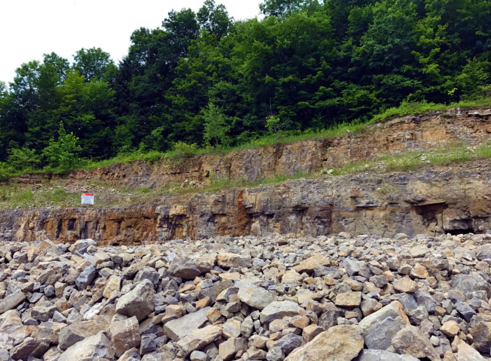

Top 10 Gemstone Mines to Visit in the U.S.
Are you a lover of gems, crystals, rocks, and precious metals? If yes, then it is with great pleasure that I would like to introduce you to one of the earth's Mecca for gemstones - the United States. The United States is a treasure trove for gem enthusiasts, boasting a rich history of gemstone mining and a diverse array of geological formations that have produced some of the world's most coveted gems. From the early days of Native American artisans crafting turquoise jewelry to the modern-day thrill of digging for your own diamonds, gemstone mining in the U.S. offers a unique blend of adventure, education, and the chance to connect with the Earth's hidden treasures.
The significance of gemstone mining in the U.S. is deeply intertwined with its cultural and economic history. From the gold rush era to the ongoing fascination with precious stones, the allure of finding valuable gems has drawn countless prospectors and hobbyists to the country's mines. The discovery of gemstones like tourmaline in Maine and California spurred interest and set the stage for what would become a popular and enduring hobby as well as an economic activity. Today, gemstone mining not only contributes to the economy but also provides a unique recreational activity for families, tourists, and anyone with a passion for geology and the natural world.
Why Gemstone Mining?
Gemstone mining offers a unique blend of adventure, education, and the thrill of discovery. It allows individuals to connect with the earth, learn about geological processes, and potentially uncover valuable gemstones. For many, the thrill of finding a glittering gem embedded in the earth is unparalleled. The appeal lies in the hands-on experience of searching for these natural treasures and the satisfaction of finding something beautiful and rare. Gemstone mining also provides a hands-on learning experience about geology, mineralogy, and the natural history of the regions where these precious stones are found.
Gemstones Found in the United States
The U.S. is a geological wonderland, boasting an impressive variety of gemstones thanks to its diverse geological formations and mineral-rich regions. The country is home to a wide range of gemstones, including:
- Diamonds: While not as abundant as in some other countries, diamonds can be found in Arkansas and Colorado.
- Sapphires: Montana is known for its beautiful blue sapphires, while other states like North Carolina and Idaho also produce these precious stones.
- Emeralds: North Carolina is the primary source of emeralds in the U.S., though smaller deposits can be found in other states.
- Rubies: While rare in the U.S., some ruby deposits have been discovered in North Carolina and Montana.
- Turquoise: The southwestern U.S., particularly Arizona and New Mexico, is famous for its high-quality turquoise.
- Garnet: Idaho, Montana, and New York are notable sources of garnet, with a variety of colors available.
- Opal: Oregon is renowned for its fire opal, while other states like Nevada and Idaho also produce opal.
- Tourmaline: Maine and California are known for their tourmaline deposits, with a range of colors from pink to green to black.
- Aquamarine: Colorado is a prime location for finding aquamarine, a beautiful blue-green gemstone.
This geological diversity is due to a combination of factors, including ancient volcanic activity, tectonic plate movements, and the presence of mineral-rich rocks. As a result, gem hunters in the U.S. can embark on exciting adventures in search of a wide variety of precious and semi-precious stones.
Top 10 Gemstone Mines in the United States
Selection Criteria for the Top Mines
To curate a list of the top ten gemstone mines in the United States, several criteria were considered:
- Accessibility: Ease of access for visitors, including transportation and infrastructure.
- Variety of Gemstones: The range of different gemstones available for discovery at each site.
- Visitor Experience: Quality of the visitor experience, including guided tours, educational programs, and facilities.
- Historical Significance: Historical importance and legacy of the mining site.
- Unique Features: Distinctive attributes that set the mine apart, such as rare gemstones or exceptional scenic beauty.
Table of Top Gemstone Mines
| Mine Name | Location | Gems Found | Admission Fees |
|---|---|---|---|
| Herkimer Diamond Mines | Middleville, NY | Herkimer Diamonds | $14 per person |
| Crater of Diamonds State Park | Murfreesboro, AR | Diamonds, Amethyst, Garnet | $10 adults, $6 children |
| Emerald Hollow Mine | Hiddenite, NC | Emerald, Hiddenite, Sapphire | From $12 |
| Rainbow Ridge Opal Mine | Virgin Valley, NV | Precious Opals | $100-$200 per day |
| Oceanview Mine | Pala, CA | Tourmaline, Kunzite, Morganite | $60 per person |
| Spectrum Sunstone Mine | Plush, OR | Sunstone (with variations) | Starting around $50 |
| Cherokee Ruby & Sapphire Mine | Franklin, NC | Ruby, Sapphire, Garnet | $30 per person |
| Graves Mountain | Lincolnton, GA | Rutile, Lazulite, Kyanite | Varies |
| Gem Mountain Sapphire Mine | Philipsburg, MT | Sapphire, Garnet, Quartz | $30 per person |
| Spokane Bar Sapphire Mine | Helena, MT | Sapphire, Garnet | Varies |
Note: Prices are subject to change. Please confirm admission fees with the mine directly before visiting.
1. Herkimer Diamond Mines, New York
- Location: Middleville, New York
- History: Discovered in the 18th century, Herkimer Diamonds are actually double-terminated quartz crystals. The site has been a popular destination for gem enthusiasts for over a century.
- Gemstones Found: Herkimer Diamonds (quartz crystals)
- Visitor Experience: Visitors can dig for their own Herkimer Diamonds. The mine offers guided tours, educational exhibits, and a gemstone sluice where you can wash the dirt away to reveal hidden treasures.
- Unique Features: Herkimer Diamonds are known for their exceptional clarity and natural faceting, making them unique among quartz crystals.
- Practical Information: Open from April to November. Admission fees are around $14 per person. Best visited during summer and fall. The site also features a campground for those who want to extend their stay. Learn More
2. Crater of Diamonds State Park, Arkansas

- Location: Murfreesboro, Arkansas
- History: Diamonds were first discovered here in 1906. It became a state park in 1972, allowing the public to search for diamonds in a 37-acre field.
- Gemstones Found: Diamonds, amethyst, garnet, jasper, agate
- Visitor Experience: The only diamond-producing site in the world open to the public. Visitors can search for diamonds and other gemstones in a plowed field. The park also has a discovery center with exhibits on diamond mining and geology.
- Unique Features: The chance to find real diamonds, with notable finds including the 40.23-carat Uncle Sam diamond, the largest diamond ever discovered in the U.S.
- Practical Information: Open year-round. Admission is $10 for adults, $6 for children. Best visited in spring and fall when the weather is mild. Learn More
3. Emerald Hollow Mine, North Carolina
- Location: Hiddenite, North Carolina
- History: Hiddenite, a rare gemstone, was discovered here in the late 19th century. The area has been a popular mining destination since the discovery.
- Gemstones Found: Emerald, hiddenite, sapphire, aquamarine, garnet
- Visitor Experience: Visitors can sluice, dig, or creek mine for gemstones. The site offers educational programs and guided tours, providing a hands-on experience in gem mining.
- Unique Features: The only emerald mine in the world open to the public for prospecting. Hiddenite is a rare gem found almost exclusively in this area.
- Practical Information: Open year-round. Admission fees vary by activity, starting at $12. Best visited in spring and summer when the weather is favorable for outdoor activities. Learn More
4. Rainbow Ridge Opal Mine, Nevada
- Location: Virgin Valley, Nevada
- History: Opals were discovered in the Virgin Valley in the early 20th century. The area is renowned for its high-quality opals.
- Gemstones Found: Precious opals
- Visitor Experience: Fee digging for opals. The mine provides basic tools and guidance, allowing visitors to dig for these beautiful stones in the mine tailings.
- Unique Features: Known for high-quality black opals, which are highly prized for their vibrant colors.
- Practical Information: Open from May to September. Admission fees range from $100 to $200 per day. Best visited in late spring and summer when the weather is most suitable for mining activities. Learn More
5. Oceanview Mine, California
- Location: Pala, California
- History: Active since the early 1900s, the Oceanview Mine is famous for its tourmaline. The Pala district is renowned for producing high-quality gemstones.
- Gemstones Found: Tourmaline, kunzite, morganite, aquamarine
- Visitor Experience: Visitors can screen and wash mine tailings to find gemstones. The site offers group tours and educational sessions, making it a great spot for families and school groups.
- Unique Features: One of the few remaining active gem mines in California, known for its beautiful and varied tourmaline crystals.
- Practical Information: Open select weekends. Admission is $60 per person. Best visited in spring and fall when temperatures are mild. Learn More
6. Spectrum Sunstone Mine, Oregon
- Location: Plush, Oregon
- History: The Spectrum Sunstone Mine is located in the high desert region of southeastern Oregon, and the mine has been operational for several decades and has become a popular destination for gemstone enthusiasts.
- Gemstones Found: Sunstone (with variations including red, green, blue, and bicolor sunstones)
- Visitor Experience: Visitors can choose to screen through high-grade ore, dig in designated areas, or even work the mine's conveyor belt to discover sunstones. The mine provides all necessary tools and equipment, along with guidance and tips for successful gemstone hunting.
- Unique Features: One of the standout features of the Spectrum Sunstone Mine is the quality and diversity of the sunstones found there. The presence of copper inclusions gives the sunstones their distinctive and highly prized sparkle.
- Practical Information: The mine is typically open from late spring through early fall, with specific dates and hours varying based on weather conditions and demand. Admission fees vary depending on the type of mining experience chosen, with prices starting around $50 for basic screening activities and going up for more intensive mining options. Learn More
7. Cherokee Ruby & Sapphire Mine, North Carolina
- Location: Franklin, North Carolina
- History: Part of the “Gem Capital of the World,” Franklin is renowned for its rich deposits of rubies and sapphires. The Cherokee Mine has been a favorite among gem hunters for decades.
- Gemstones Found: Ruby, sapphire, garnet, moonstone
- Visitor Experience: Visitors can choose from dig-your-own options and flume mining. The mine provides tools and assistance with gemstone identification.
- Unique Features: Natural, unsalted gem ore, meaning that the gemstones found are truly from the local area and not seeded for tourists.
- Practical Information: Open from May to October. Admission is $30 per person. Best visited in summer when the weather is warm and the conditions for mining are ideal. Learn More
8. Graves Mountain, Georgia
- Location: Lincolnton, Georgia
- History: Mined since the 1920s, Graves Mountain is famous for its rutile and lazulite. The site has been a popular destination for mineral collectors and geology enthusiasts.
- Gemstones Found: Rutile, lazulite, kyanite, pyrite, hematite
- Visitor Experience: The site hosts rockhounding events twice a year where visitors can collect minerals from the mine. The mine provides tools and safety instructions.
- Unique Features: Known for unique and rare minerals, Graves Mountain is a favorite among serious mineral collectors.
- Practical Information: Open during special events. Admission fees vary. Best visited during spring and fall events when the weather is suitable for outdoor activities. Learn More
9. Gem Mountain Sapphire Mine, Montana

- Location: Philipsburg, Montana
- History: Sapphires were discovered in the late 19th century, and the mine has been a popular destination for gem hunters ever since.
- Gemstones Found: Sapphire, garnet, quartz
- Visitor Experience: Visitors can wash gravel from the mine to find sapphires. The site offers guided tours and gem-cutting services, allowing visitors to turn their finds into beautiful jewelry.
- Unique Features: Known for its high-quality sapphires, which come in a range of colors including blue, green, and yellow.
- Practical Information: Open from May to October. Admission is $30 per person. Best visited in summer when the weather is warm and conditions are ideal for outdoor mining activities. Learn More
10. Spokane Bar Sapphire Mine, Montana
- Location: Helena, Montana
- History: Sapphires have been mined here since the late 1800s. The area is famous for its sapphire deposits, which have been a draw for gem hunters for over a century.
- Gemstones Found: Sapphire, garnet
- Visitor Experience: Visitors can dig their own sapphire gravel and search for gems. The mine offers tools and guidance, making it a great spot for families and novice gem hunters.
- Unique Features: Family-friendly mining experience with the chance to find beautiful Montana sapphires.
- Practical Information: Open from May to September. Admission fees vary. Best visited in summer when the weather is favorable for outdoor mining activities. Learn More
RELATED TOPIC:Urban Rockhounding: Crystal Hunting in the Concrete Jungles of the US
Tips for Successful Gem Mining in the United States
What to Bring
- Tools: Small shovel, rock hammer, screens or classifiers, buckets.
- Clothing: Durable clothes, gloves, sturdy shoes or boots, a hat, and sunscreen.
- Other Essentials: Water, snacks, a small first-aid kit, and a container for your finds.
Snacks & Hydration

Energy Bars
Stay energized with the best energy bars for your rockhounding adventures.
Our Favorites

Must Have Rockhounding Tools


How to Prepare for a Visit
- Physical Preparation: Some sites require physical effort. Be prepared for digging and carrying tools and finds.
- Weather Considerations: Check the weather forecast. Dress appropriately for the conditions and season.
Gemstone Identification Tips
- Basic Identification: Learn the basics of gemstone identification, such as color, hardness, and crystal structure.
- Resources: Carry a field guide or use smartphone apps for on-site identification.
- Expert Help: Utilize the expertise available at the mine, such as guides and gemologists.
Other Top Sites to Visit for Gem Hunting
Aside from the top 10 gem hunting spots listed above, there are other popular sites for gem hunting located all across the United States. Use the buttons below to search for other sites based on locations and gems.
Gold Prospecting Locations
If you love to go gold prospecting, you’re in luck! There are many places across the United States where you can find gold, and some of them are even open to the public. Here are some of the best gold prospecting locations in America:
General Mining Regulations
Gem mining regulations vary from state to state and from mine to mine. Always check the specific regulations for the mine you plan to visit before you go. In general, you should be aware of the following:
- Collecting Limits: Some mines have limits on the amount of material you can collect per day.
- Restricted Areas: Some areas of a mine may be off-limits to visitors.
- Permits and Fees: Some sites require permits or fees for mining. Check local regulations before visiting.
- Environmental Regulations: Some mines have regulations in place to protect the environment.
- Environmental Responsibility: Practice responsible mining by filling in holes, respecting property boundaries, and following site-specific rules.
- Safety Guidelines: Follow safety instructions provided by the mining site. Use protective gear and be cautious of your surroundings.
Be sure to follow these regulations to help preserve the natural beauty of the area.
Conclusion
Exploring the top ten gemstone mines in the United States offers a unique blend of adventure, education, and the chance to find valuable and beautiful gems. From the renowned Herkimer Diamond Mines in New York to the opulent Crater of Diamonds State Park in Arkansas, each location provides a distinct and memorable experience. Whether you're a seasoned rockhound, a geologist, or a crystal enthusiast, these destinations offer something special for everyone. Embark on your own gemstone mining adventure and uncover the hidden treasures that lie beneath the surface of America's diverse geological landscape.
Disclaimer: Please note that the information provided in this article is for informational purposes only. Before visiting any mine or engaging in gem-hunting activities, it's essential to research and adhere to all applicable regulations and guidelines. Happy hunting!